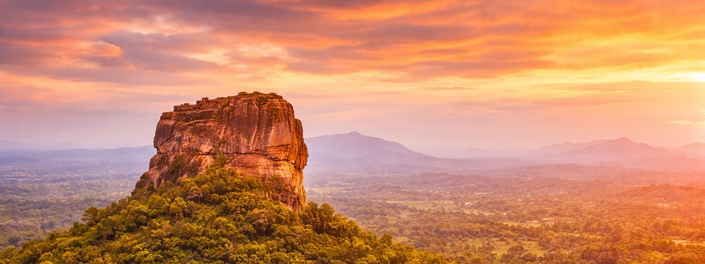
Ancient kingdoms • Sacred temples • Living heritage
Sri Lanka is a living museum where history is not locked behind glass, it stands tall under the open sky. From ancient royal capitals to sacred temples carved into rock, every step takes you deeper into a civilization that flourished for over two millennia. Climb the legendary sky fortress of Sigiriya, built by a king in the 5th century. Walk among the sacred dagobas and monastic ruins of Anuradhapura, one of the oldest continuously inhabited cities in the world. Explore the beautifully preserved stone temples and statues of Polonnaruwa, a masterpiece of medieval engineering and art. Step inside the golden cave shrines of Dambulla Cave Temple, where ancient murals still glow with color. These places are not just ruins,they are stories of kings, monks, artists, and pilgrims that shaped a rich cultural heritage still alive today. ✨ In Sri Lanka, history surrounds you, you don’t just see it, you walk through it.
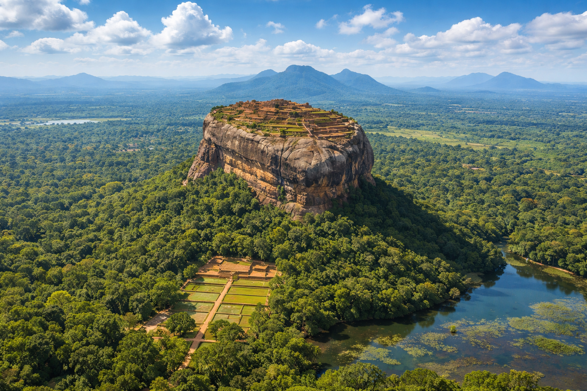
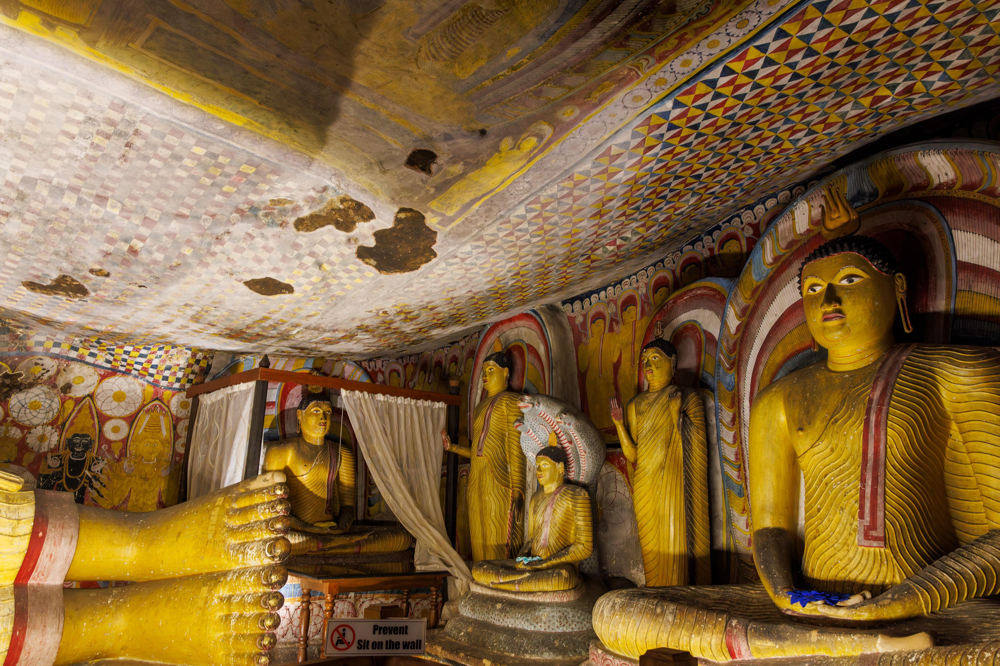
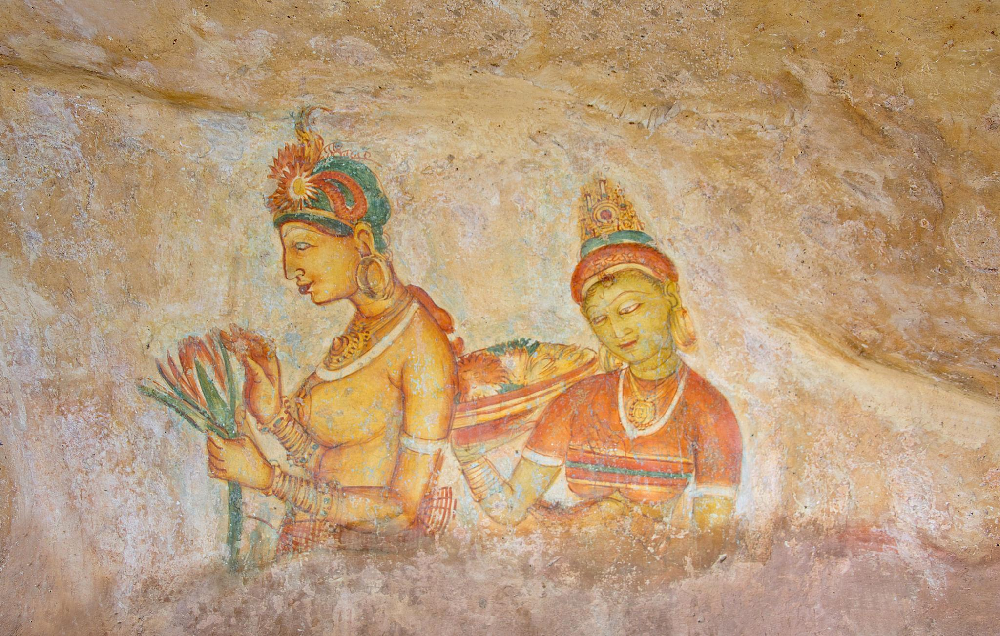
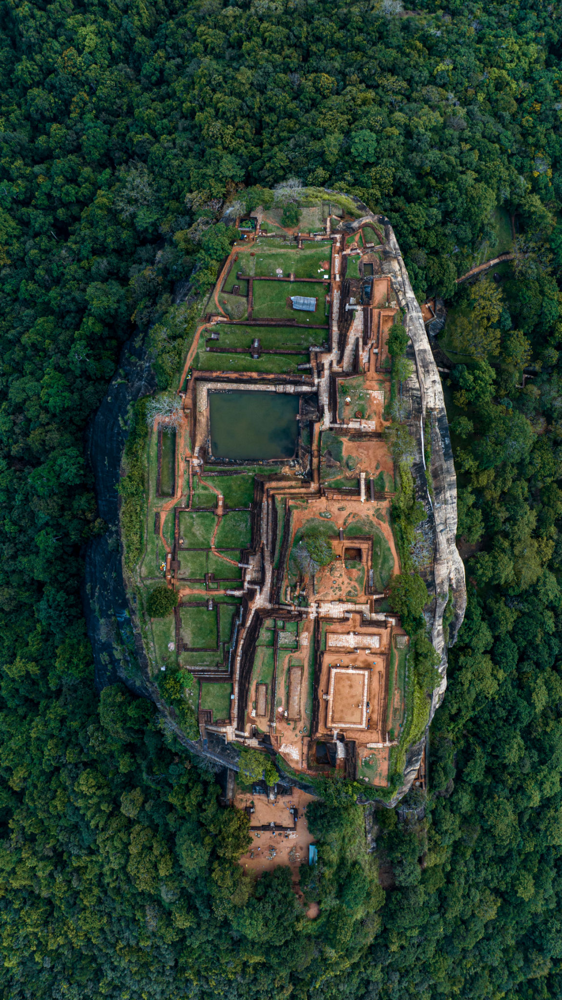
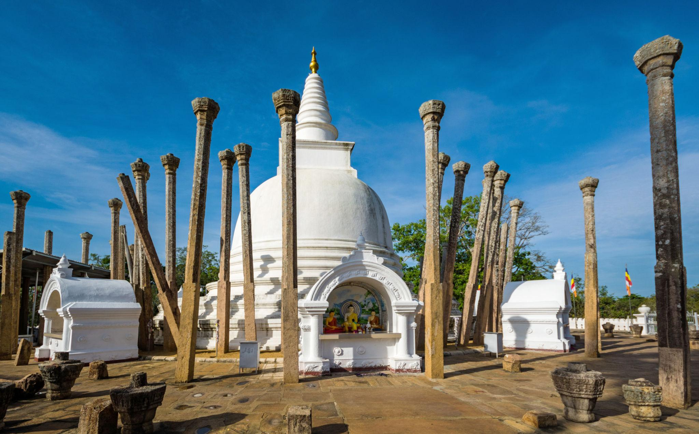
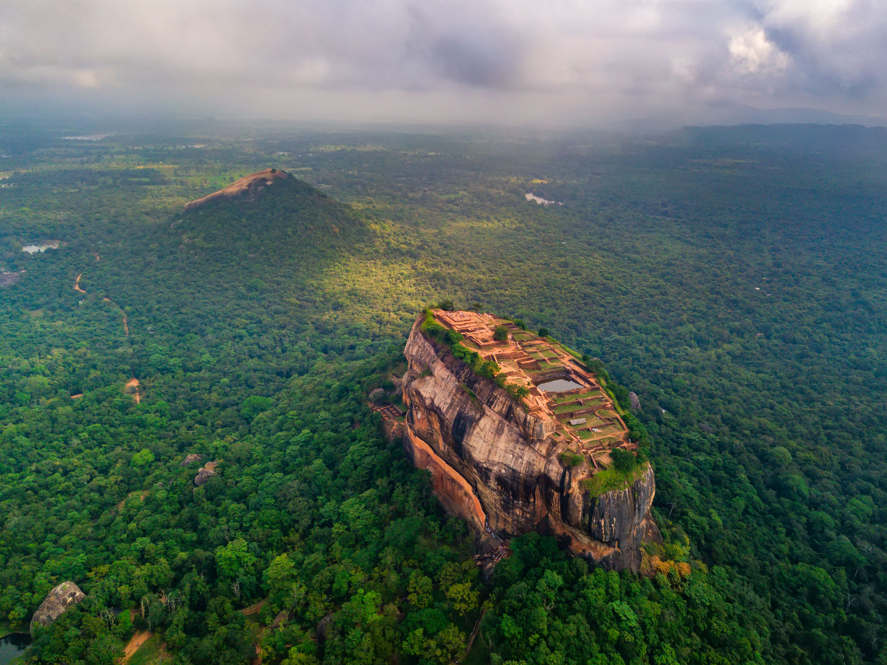
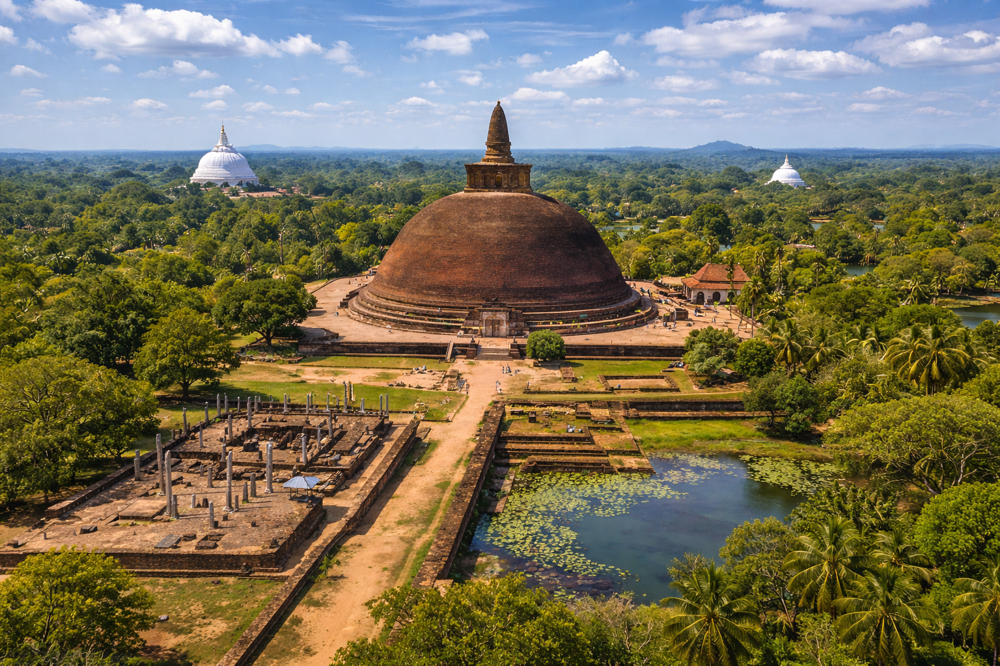
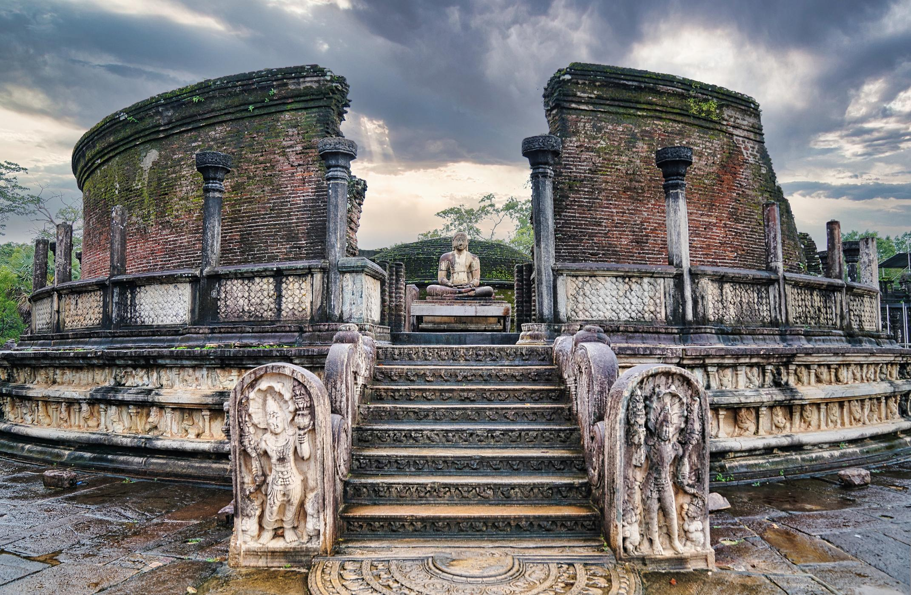
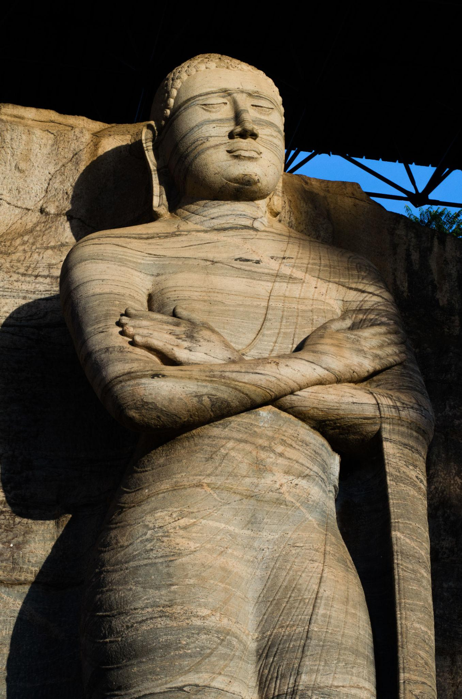
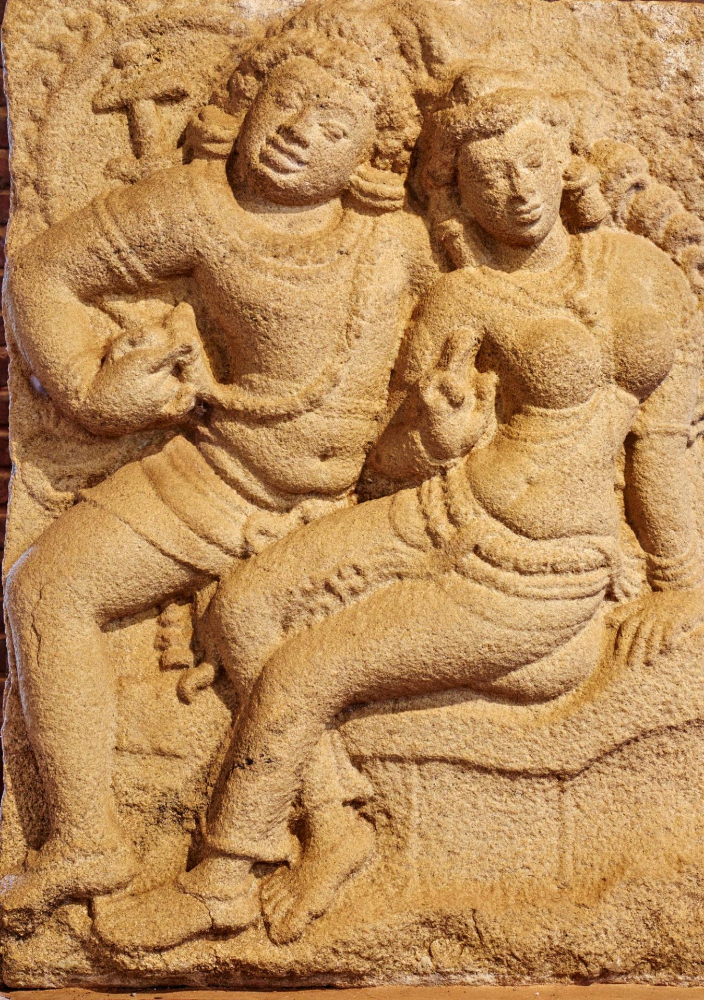
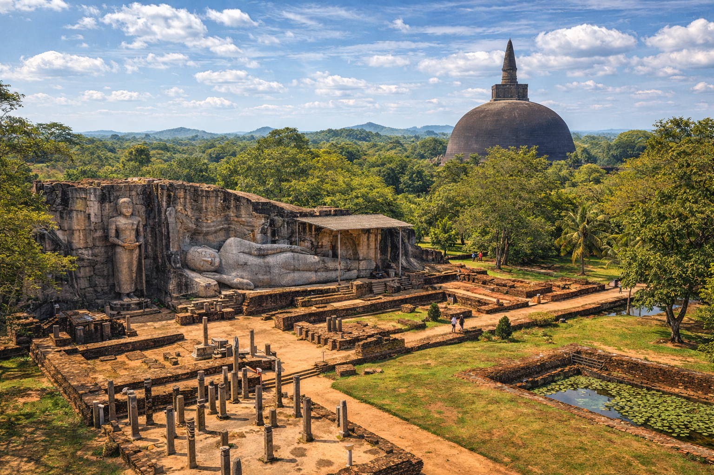
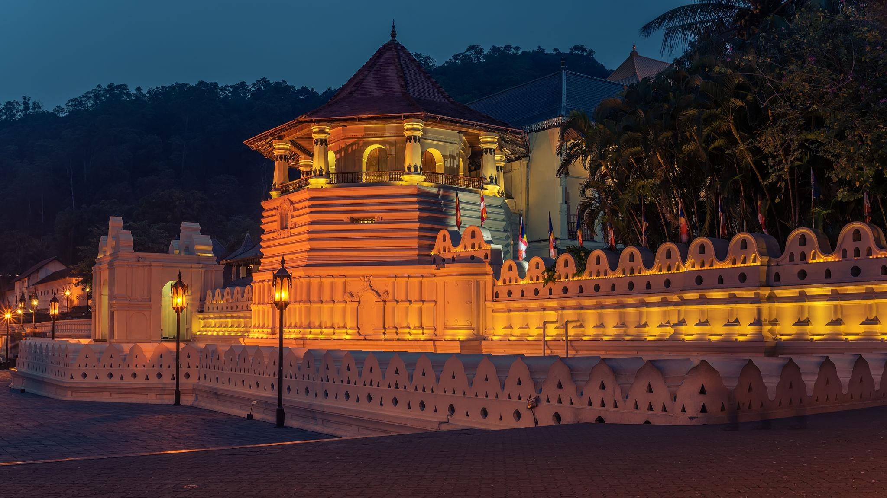
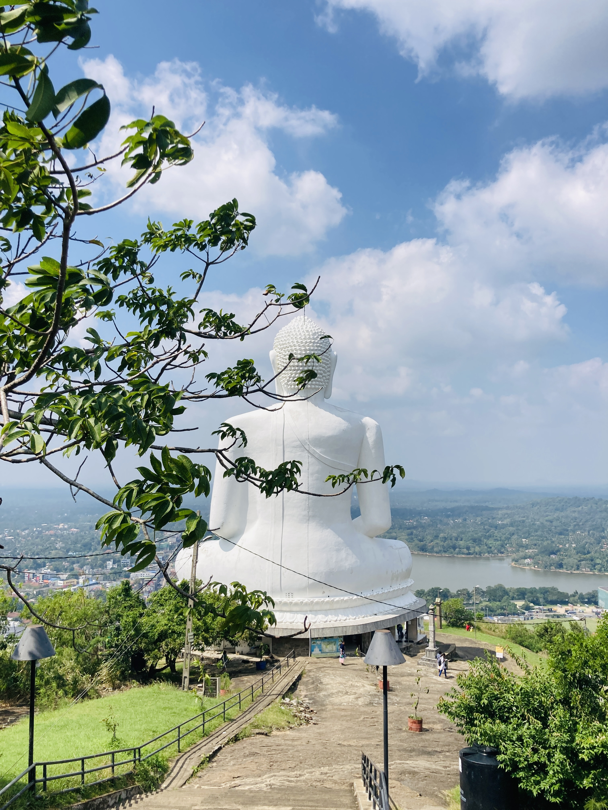